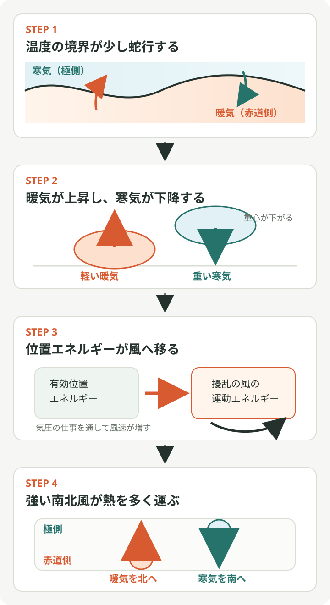

フィリップスの鉛直2層GCMで、シアから擾乱が育つ仕組み
元の質問
1950年代のフィリップスの鉛直2層GCMで、鉛直シアが大きくなると擾乱・惑星波が生じるが、気象初心者向けに説明して？
回答
上下の風速差が大きい大気は、南北の温度差に由来する「使える位置エネルギー」を多く蓄えています。小さな蛇行が暖気を極側へ、寒気を赤道側へ運べる配置になると、そのエネルギーが蛇行の運動エネルギーへ変わり、蛇行は自ら成長します。これが傾圧不安定です。フィリップスの鉛直2層モデルは、この仕組みを上層と下層の2枚だけで表しました。1956年の数値実験では、南北温度差を作った後に小さなランダム擾乱を加えると、約6000 kmの大規模な波が発達しました。[1]
まず「2層」を上下2本のベルトコンベヤーとして考える
モデルの大気は、上層と下層の2枚で表されます。現実の連続した鉛直構造を粗く切ったものなので、雲や積乱雲の細部を再現するモデルではありません。その代わり、上層の西風と下層の西風の速さが違うという、大規模な大気の重要な性質を最小限の構造で残せます。
上層の風を \(U_{\mathrm{upper} }\)、下層の風を \(U_{\mathrm{lower} }\) とすれば、その差
\[ \Delta U = U_{\mathrm{upper} }-U_{\mathrm{lower} } \tag{1} \]
が鉛直シアの簡単な目安です。式 (1) が大きいほど、上下の空気は異なる速さで東へ進もうとします。
鉛直シアの背後には南北温度差がある
中緯度の大規模な流れでは、鉛直シアと南北温度差は温度風の関係で結びついています。北向きの座標を \(y\)、高さを \(z\)、地衡風の東西成分を \(u_g\)、重力加速度を \(g\)、コリオリパラメータを \(f\)、代表温度を \(T\) とすると、近似的に
\[ \frac{\partial u_g}{\partial z} \approx -\frac{g}{fT}\frac{\partial T}{\partial y} \tag{2} \]
となります。北半球で赤道側が暖かく極側が寒いと、\(\partial T/\partial y<0\) なので、一般に西風は上空ほど強くなります。したがって「シアが大きい」は、上下の風がずれているという情報に加えて、南北温度差が大きく、暖かい空気と冷たい空気の配置にエネルギーが蓄えられていることの目印でもあります。
平らな境界が少し波打つと、エネルギーを取り出せる
波が成長する理由は、重い空気が下がり、軽い空気が上がるときに減った位置エネルギーが、擾乱の風の運動エネルギーへ移るからです。 暖気が南、寒気が北に整然と並んでいる状態から、次の4ステップを順に追うと理解しやすくなります。STEP 1と4は大気を上から見た水平断面、STEP 2は南北方向に切った鉛直断面、STEP 3はエネルギー変換を表す概念図です。

- 小さな蛇行ができる: 最初から完全にまっすぐな流れだけが存在する必要はありません。数値の丸め、地形、加熱のむらなどに相当する小さな揺らぎがあると、ある場所では暖気が北へ、別の場所では寒気が南へ張り出します。
- 暖気側で上昇し、寒気側で下降する: 成長する傾圧波では、暖かく密度の小さい空気が上昇する場所と、冷たく密度の大きい空気が下降する場所が組み合わさります。重い空気が低い位置へ移るため、大気全体の重心が下がります。
- 気圧差が空気を押して風を強める: 暖気が上昇する側では地上付近の気圧が相対的に低くなり、寒気が下降する側では高くなります。この高低の気圧差が空気を押す仕事をするため、減った有効位置エネルギーが擾乱の風の運動エネルギーへ移り、東西風と南北風の振幅が大きくなります。
- 強い南北風が熱輸送を増やす: 南北風が速くなると、同じ時間に南北の境界を横切る空気の量が増えます。暖気を北へ運ぶ流れと寒気を南へ運ぶ流れがともに強まり、南北温度差をならす熱輸送が増えます。
STEP 3の矢印は、「空気が高気圧から低気圧へ一直線に吹き続ける」という意味ではありません。実際の大規模な大気では、気圧差で動き始めた空気が地球の自転によるコリオリ力で曲げられ、低気圧・高気圧の周りを回る風になります。ここで重要なのは、気圧差が空気に仕事をして風速を増すというエネルギーの受け渡しです。
最後のステップは、南北風の擾乱を \(v'\)、温度の擾乱を \(T'\) とすると、極向き熱輸送の強さが平均的に \(\overline{v'T'}\) で表されることから確認できます。北向きを正とすれば、暖気を北へ運ぶ場所では \(v'>0\) かつ \(T'>0\)、寒気を南へ運ぶ場所では \(v'<0\) かつ \(T'<0\) です。どちらも積 \(v'T'\) は正になり、極向き熱輸送へ寄与します。
たとえば、暖気側が \(v'=+2\ \mathrm{m\,s^{-1} }\)、\(T'=+2\ \mathrm{K}\)、寒気側が \(v'=-2\ \mathrm{m\,s^{-1} }\)、\(T'=-2\ \mathrm{K}\) なら、どちらの積も \(+4\ \mathrm{K\,m\,s^{-1} }\) です。温度偏差が同じまま南北風が \(4\ \mathrm{m\,s^{-1} }\) へ倍増すれば、積も \(+8\ \mathrm{K\,m\,s^{-1} }\) へ倍増します。これが「風が強まると、さらに多くの暖気と寒気を運ぶ」の具体的な意味です。
この正のフィードバックを、エネルギーの流れだけで書けば、
\[ \text{平均場の有効位置エネルギー} \longrightarrow \text{擾乱の位置エネルギー} \longrightarrow \text{擾乱の運動エネルギー} \tag{3} \]
です。フィリップスの1954年の二層モデル解析では、不安定波の擾乱エネルギーの約95%が基本場の「位置エネルギー」に由来し、基本場の運動エネルギーから来る分は小さいと示されました。[2] つまり、強い西風が直接波へ姿を変えるというより、西風の鉛直シアと結びついた温度配置が主な燃料です。
上下の波のずれが、暖気と寒気を運ぶ
二層が同じ形で完全に重なって蛇行するだけでは、南北温度差から効率よくエネルギーを取り出せません。成長する傾圧波では、上層と下層の気圧の谷・尾根の位置がずれます。この鉛直方向の傾きによって、南北風と温度偏差の組み合わせが生まれ、暖気を極側へ、寒気を赤道側へ運びます。
このため、フィリップスのモデルで上下2層を用意したことには大きな意味があります。1層だけでは表せない上層と下層の位相差、温度輸送、位置エネルギーから運動エネルギーへの変換を、2層なら最小限表現できます。
1956年の実験では何が起きたか
フィリップスは、簡略化したβ面上の準地衡風二層モデルを用いました。まず東西方向に一様な状態で約130日計算し、低緯度を加熱、高緯度を冷却して南北温度差と西風の鉛直シアを作りました。その後、上層と下層に小さなランダム擾乱を加えて計算を続けました。[1]
擾乱は最初の約5日間には一度弱まりましたが、その後は規則的な大規模波が成長しました。波は東へ進み、低気圧・高気圧、寒気・暖気の舌、上昇流・下降流など、実際の天気図に似た特徴を示しました。また、擾乱が顕熱を極向きに運んだため、増え続けていた南北温度差は止まり、最終的には小さくなりました。[1]
「シアが波を作る」を正確に言い直す
| 短い言い方 | より正確な意味 |
|---|---|
| シアが波を作る | シアと結びついた温度傾度をエネルギー源として、小さな擾乱のうち成長可能な波が増幅する。 |
| 臨界値を超えると突然波が生まれる | 小さな擾乱はすでにあり、その成長率が正になって目立つ大きさへ増幅する。 |
| 強い風が波の燃料になる | 主な燃料は、南北温度差に蓄えられた有効位置エネルギーである。 |
また、シアが大きければどんな波でも成長するわけではありません。大気の静的安定度、波長、地球自転の緯度変化であるβ効果、摩擦などによって、成長できる条件と最も成長しやすい波長が決まります。フィリップス自身も、二層モデルが見積もった臨界温度差などには現実とのずれがあると指摘しています。[1]
「擾乱」と「惑星波」は同じとは限らない
この実験で成長した約6000 kmの波は、地球規模の大きな波状擾乱です。ただし気象学で「惑星波」は、しばしばβ効果を復元機構とするロスビー波全般、またはさらに波数の小さい超長波を指します。一方、フィリップスの実験で中心となる成長機構は傾圧不安定で、現実の温帯低気圧に近い移動性の傾圧波です。
したがって初心者向けには、まず「鉛直シアのある中緯度大気で、大規模な蛇行と低気圧・高気圧が育った」と理解するのが安全です。その波が地球の回転とβ効果の影響も受けるという順に整理すると、傾圧不安定とロスビー波を混同しにくくなります。
回転水槽の動画で、波と熱輸送を見る
最初に見るなら、MIT OpenCourseWareの回転水槽実験が最も直接的です。 水槽中央の氷入り容器が「冷たい極」、外側が「暖かい赤道」に対応します。回転が速くなると、軸対称な循環から波状の渦へ移り、暖かい水を内側へ、冷たい水を外側へ運ぶ様子が見えます。これは大気で暖気が極側へ、寒気が赤道側へ運ばれる過程に対応します。[3]
- MIT OpenCourseWare: Experiment XI — Baroclinic Instability of the Thermal Wind
氷で中央を冷やした回転水槽に、傾圧波と渦が育つ実験です。最初は円周方向に滑らかだった流れが蛇行し、複数の渦へ発達する点を見ます。[3] - UCLA DIYnamics: Baroclinic Eddies in a Tank & in Earth's Atmosphere
水槽内の傾圧渦と実際の大気を対応させた動画です。色の境界の蛇行を、天気図の暖気・寒気の舌や温帯低気圧の波と重ねて見られます。[4] - MIT Weather in a Tank: Fronts — Tank Examples
密度の異なる二層の境界面と表面流を使い、水平密度差と鉛直シアの関係を示す補助教材です。斜面が急な場所ほど上側の流れが速い点が、式 (2) の温度風に対応します。ページ内の動画は回転するカメラから撮影されています。[5]
水槽実験では、半径方向の温度差を地球の南北温度差に置き換えて読みます。中央が極、外周が赤道、円周方向が地球を一周する東西方向です。水槽の渦はフィリップスの二層モデルそのものではありませんが、温度差と回転がある流体で、まっすぐな平均流から波が育ち、その波が熱を運ぶという共通の仕組みを可視化しています。
まとめ
加熱差が南北温度差を作り、温度風の関係によって鉛直シアが生まれ、その温度差からエネルギーを得られる小さな蛇行が傾圧不安定で成長する、という順番です。成長した波は暖気を極側へ、寒気を赤道側へ運び、元の温度差を弱めます。フィリップスの二層GCMは、複雑な大気を2枚にまで単純化しながら、この「温度差が低気圧・高気圧の活動へ変わる」基本的な循環を再現した点に歴史的な意義があります。
参照
- Phillips, N. A. (1956), The general circulation of the atmosphere: A numerical experiment, Quarterly Journal of the Royal Meteorological Society, 82, 123–164
- Phillips, N. A. (1954), Energy Transformations and Meridional Circulations associated with simple Baroclinic Waves in a two-level, Quasi-geostrophic Model, Tellus, 6, 273–286
- MIT OpenCourseWare, GFDXI: Atmospheric general circulation
- UCLA DIYnamics, Baroclinic Eddies in a Tank & in Earth's Atmosphere
- MIT Weather in a Tank, Fronts: Tank — Examples